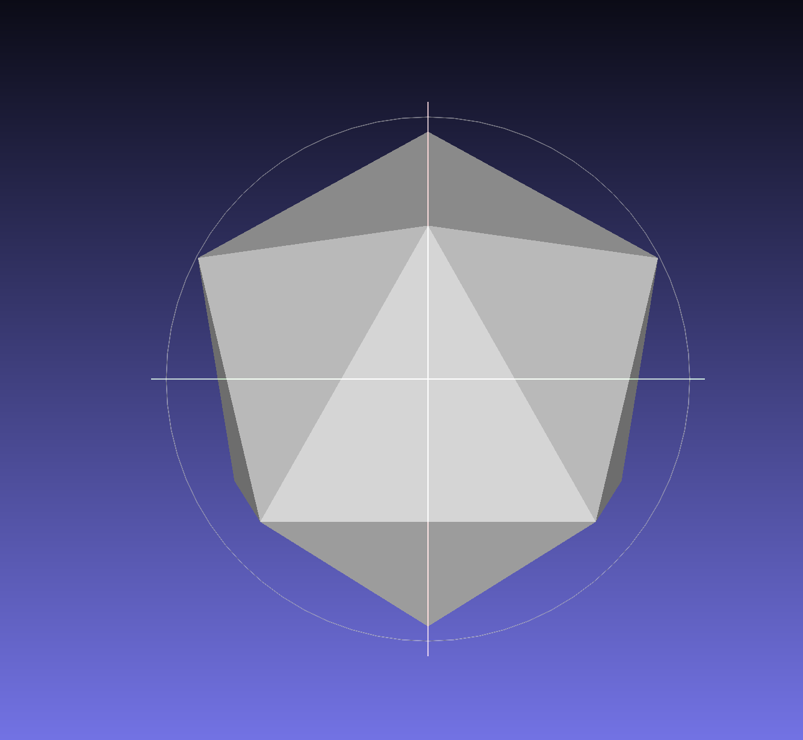
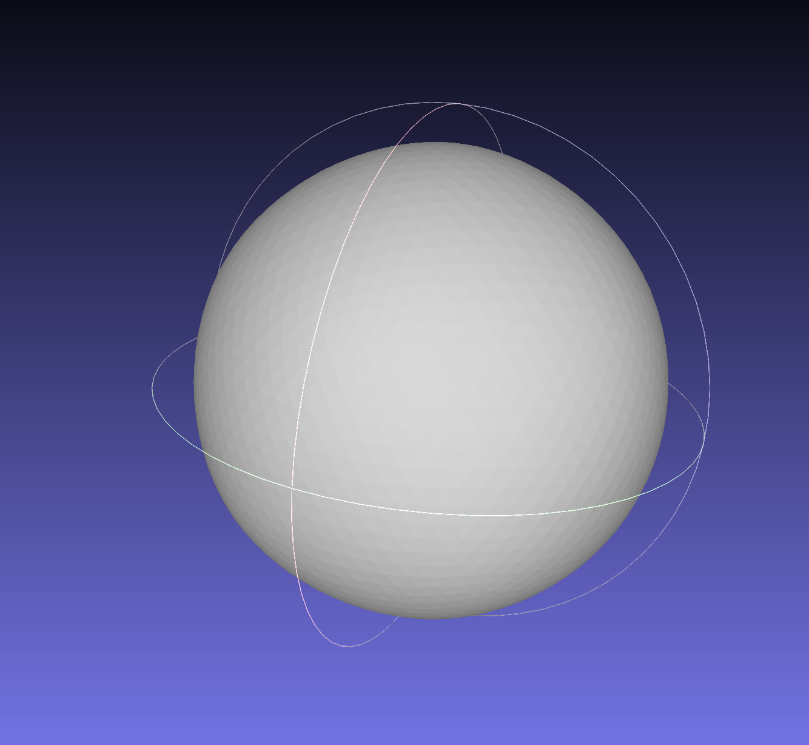
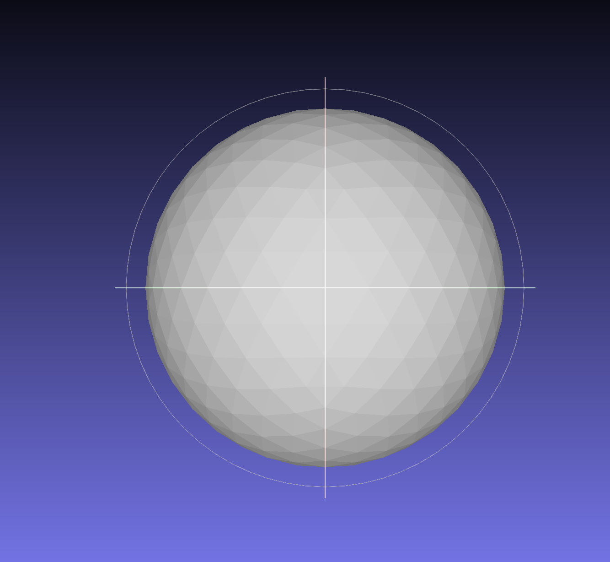
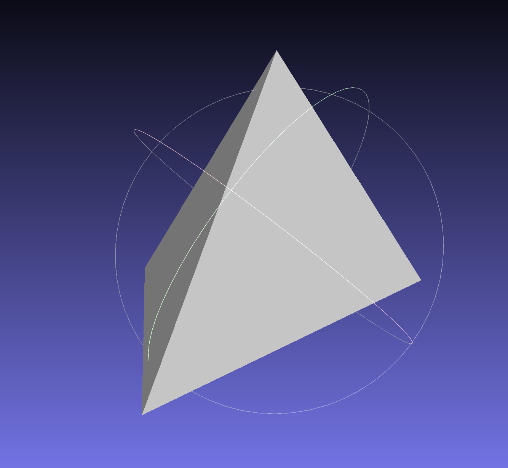
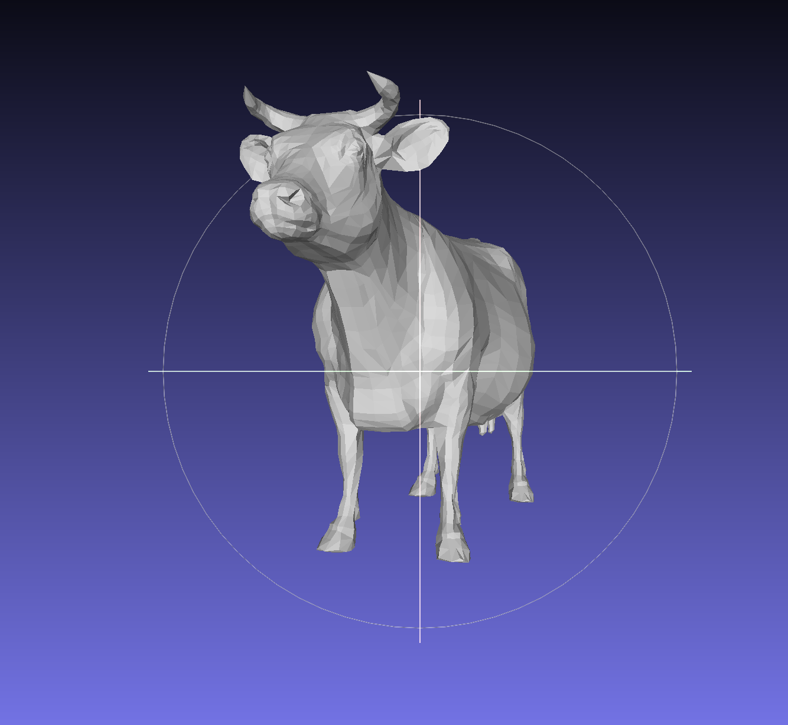

Mesh
For my advanced computer graphics class I wrote a mesh processor to take in an OBJ file with vertices and faces, convert it to a half edge data structure, then perform mesh operations. The mesh operations I wrote include atomic mesh operations (edge split, flip, and collapse), which are used to support loop subdivision, quadric error simplification, and bilateral mesh denoising.
Below are example resulting meshes!

Icosahedron before loop subdivision

Icosahedron after 4 iterations of loop subdivision

Sphere before quadric error simplification

Sphere after quadric error simplification

Cow before quadric error simplification
Cow after quadric error simplification (wow! what a simple cow!)
Bunny with no more noise, thanks to bilateral mesh denoising :D